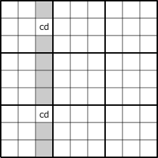
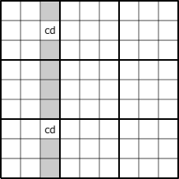
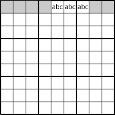
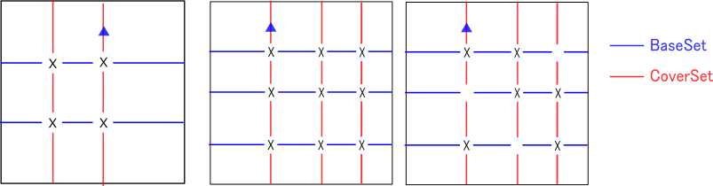
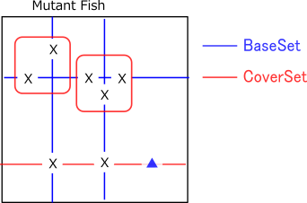
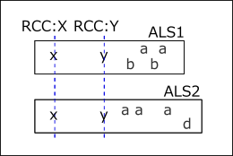

Locked
(0) SuDoKu Algorithm
"Locked"は、数独解析における重要な概念です。

Lockedは、セル(群）の候補数字、候補数字の数、セルの配置関係から生じる制限で、
候補数字が肯定的あるいは否定的に限定されます。Lockedには、いくつもの種類があります。

また、Locked によって、その周辺の候補数字(群）が肯定あるいは否定になります。

(1) LockedSet
LockedSetは最も単純なLockedです。( =>LockedSet )
あるhouseについて、n個のセルに着目するとそれらの候補数字がn個のとき、このセル群の候補数字はLockedされます。
n=1は、解析解析アルゴリズムのSingle(Last Digit,Naked Single,Hidden Single)によって、１数字が確定した状態です。

次の図は、”2つのセルに2つの数字”のケースで、部分的な数字の確定のケースです。
”盤面のそれぞれのセルの数字を確定する”といった数独解からすると、これは解き方の１ステップです。
実際に、これらの図の色付きセルでは、着目セルの数字は否定的に確定します。
 


次の図は、3セル3数字と4セル4数字のLockedSetです。(右図は、一部の候補数字が欠けているケース）
lockedしたセル群・数字は、数独盤面の中でここが肯定的に確定し、
グレー背景セルの数字は否定的に確定します。


また、次図では、数字の配置から導かれたセル・数字が否定的に確定します。

LockedSetによる 数独盤面の肯定的/否定的に確定する箇所がないときは、
lockedしたセル群では、複数の数字パターンがあることになります。
すなわち、”問題が解けない、あるいは数独の問題ではない(唯一解がない）”ことになります。
Lockedのこのような特性は、以下で述べる他のタイプのLockedでも同じです。
(2) Fish / GeneralLogic
Fishは、2組のhouseで生じるLockedです。
数字Xに着目し、数字Xを最大N個(Nは次数）含むhouseをN個選び、これをBaseSetと呼びます。
BaseSetのHouseは重なりがないとします。
また、BaseSetを完全に含むように、もう1組のN個のHouseを選びます。これをCoverSetと呼びます。
CoverSetについてもHouseは重なりがないとします。
このように選んだ、BaseSet、CoverSetの共通部分はLockedとなっています。
(注.重なりありのタイプのLockedもある）

次の図のように、CoverSetに含まれ BaseSet含まれない要素(図の青三角の要素)は、否定に確定します。
もしも、青三角要素が肯定であると、Basesetの肯定の要素が足りなくなります。
したがって、命題”青三角の要素は確定”は偽となります。

Fishは、次のように拡張できます。
- fishのサイズは、2～7
- BaseSet/CoverSetのhouseは、行・列・ブロックの1種類だけでなく、これらを任意に組み合わせることができる。
(Franken/mutant Fish) - BaseSet/CoverSetのhouseは、行・列・ブロックに加えて”数字”に拡張できる (GeneralLogic)
- BaseSet/Coversetは、重なりのある場合に拡張できる。(EndoFin/Cannibasatics Fish）)
- Fin付きFish


数独アルゴリズムは（多くは？）Fishの拡張である GeneralLogic
で再構成できます。
つまり、数独の解法アルゴリズムは、 Locked が基本となっているといえます。
(3) ALS-XZ Doubly_Linked
ALSは、n 個のCellに(n+1) 数字が含まれる状態で、これだけでは何も確定しません。
次図のように2つのALSが、ALSのHouseとは別のhouseで結びついているとき、共通の数字をRCC(Restricted Common Candidate)と呼びます。
2つのALSが2つのRCCで結びついているケースを考えます。
2つのx, y は2つのALSにそれぞれ1つづつ含まれ、一方に同時に含まれることはありません。
このとき、2つのALSは一体となってLockedになります。

(4) SDC(SueDeCoq)
SDC(SueDeCoq)は、ALS-XZ (DoublyLink)の拡張で、2つのALSがAnLSで結びついた状態です。これも
数独盤面の中に存在するLockedです。
GNPX v5 のSDCのコードは、ALS/AnLSを用いたアルゴリズムで実装しています。
（補足：成立条件式の”-n”は、Stem AnLSに連結しているALSが n 個あることに対応する。これによってAnLSは Locked になる。）
将来のバージョンでは、さらに拡張できる予感がします(v6)。